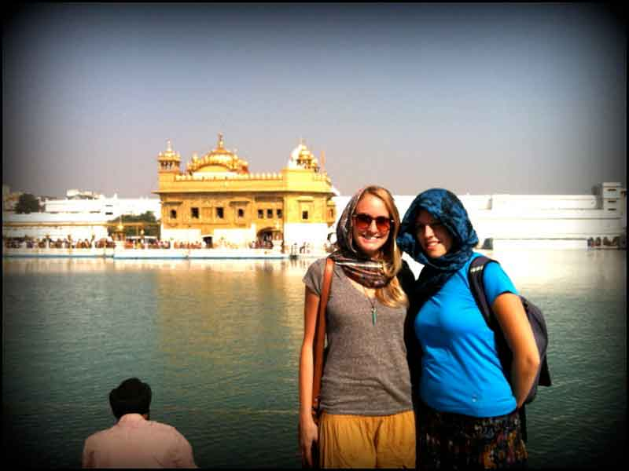

Amritsar, city, northern Punjab state, northwestern India. It lies about 15 miles (25 km) east of the border with Pakistan. Amritsar is the largest and most important city in Punjab and is a major commercial, cultural, and transportation centre. It is also the centre of Sikhism and the site of the Sikhs’ principal place of worship—the Harmandir Sahib, or Golden Temple.
Amritsar was founded in 1577 by Ram Das, fourth Guru of the Sikhs, on a site granted by the Mughal emperor Akbar. Ram Das ordered the excavation of the sacred tank, or pool, called the Amrita Saras (“Pool of Nectar”), from which the city’s name is derived. A temple was erected on an island in the tank’s centre by Arjan, the fifth Guru of the Sikhs, which was then reached by a marble causeway. During the reign of Maharaja Ranjit Singh (1801–39), the upper part of the temple was decorated with a gold-foil-covered copper dome, and since then the building has been popularly known as the Golden Temple. Amritsar became the centre of the Sikh faith, and, as the focus of growing Sikh power, the city experienced a corresponding increase in trade. It was annexed to British India in 1849.